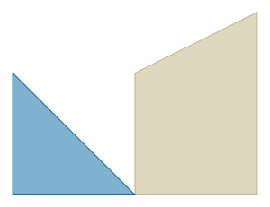
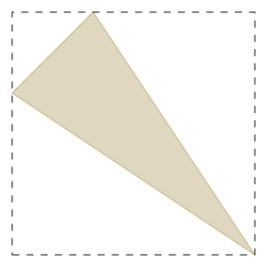
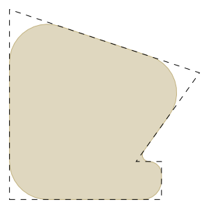
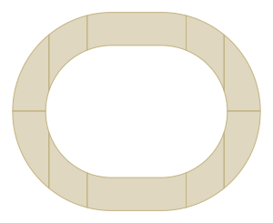

gdstk.Polygon¶
-
class
gdstk.Polygon(points, layer=0, datatype=0)¶ Polygonal geometric object.
- Parameters
points (sequence) – Vertices of the polygon. Each element can be a pair of coordinates or a complex value.
layer – GDSII layer number assigned to this polygon.
datatype – GDSII data type number assigned to this polygon.
Examples
>>> polygon_1 = gdstk.Polygon([(0, 0), (1, 0), 1 + 1.5j, 1j]) >>> polygon_2 = gsdkt.Polygon([0j, (-1, 1), (-1, 0)], 2, 3)
Methods
area()Polygon area.
Calculate the polygon bounding box.
copy()Create a copy this polygon.
delete_property(attr)Delete property of this polygon.
fillet(radius[, tolerance])Fillet the corners of this polygon.
fracture([max_points, precision])Fracture this polygon into a list of polygons.
get_property(attr)Return a property of this polygon.
mirror(p1[, p2])Mirror this polygon across the line through
p1andp2.rotate(angle[, center])Rotate this polygon.
scale(sx[, sy, center])Scale this polygon.
set_property(attr, value)Set a GDSII property for this polygon.
translate(dx, dy)Translate this polygon.
Attributes
Polygon data type.
Polygon layer.
Vertiecs of the polygon.
Number of vertices in this polygon.
-
area() → float¶ Polygon area.
- Returns
Area of the polygon.
- Return type
float
-
bounding_box() → tuple¶ Calculate the polygon bounding box.
- Returns
The lower-left and upper-right corners of the bounding box of the polygon:
((min_x, min_y), (max_x, max_y)).
Examples
>>> polygon = gdstk.Polygon([(0, 1), (1, 2), (3, -1)]) >>> bbox = polygon.bounding_box() >>> print(bbox) ((0.0, -1.0), (3.0, 2.0)) >>> polygon_bb = gdstk.rectangle(*bbox, datatype=1)
-
copy() → gdstk.Polygon¶ Create a copy this polygon.
- Returns
Copy of this polygon.
-
datatype¶ Polygon data type.
-
delete_property(attr) → self¶ Delete property of this polygon.
- Parameters
attr (number) – Property number.
-
fillet(radius, tolerance=0.01) → self¶ Fillet the corners of this polygon.
- Parameters
radius (number or sequence) – Fillet radius. A sequence of values can be used to define the fillet radius for each vertex.
tolerance – Tolerance used for calculating the polygonal approximation of the filleted corners.
Notes
The actual fillet radius for a given corner is the specified value or half the lenght of the shortest segment adjacent to that corner, whichever is smaller.
Examples
>>> points = [(0, 0), (1.2, 0), (1.2, 0.3), (1, 0.3), (1.5, 1), ... (0, 1.5)] >>> polygon_1 = gdstk.Polygon(points, datatype=1) >>> polygon_2 = gdstk.Polygon(points).fillet(0.3, tolerance=1e-3)
-
fracture(max_points=199, precision=0.001) → self¶ Fracture this polygon into a list of polygons.
- Parameters
max_points – Maximal number of vertices for each resulting polygon. Official GDSII documentation requires that all polygons have at most 199 vertices, but 8190 is usually supported by most software.
precision – Desired vertex precision for fracturing.
Examples
>>> polygon = gdstk.racetrack((0, 0), 30, 60, 40, tolerance=1e-3) >>> poly_list = polygon.fracture() >>> print(len(poly_list)) 10 >>> print([p.size for p in poly_list]) [102, 103, 103, 101, 101, 102, 102, 103, 103, 102]
-
get_property(attr) → str¶ Return a property of this polygon.
- Parameters
attr (number) – Property number.
- Returns
Property value. If the property number does not exist,
Noneis returned.- Return type
str or None
-
layer¶ Polygon layer.
-
mirror(p1, p2=0, 0) → self¶ Mirror this polygon across the line through
p1andp2.- Parameters
p1 (coordinate pair or complex) – First point in the mirror line.
p2 (coordinate pair or complex) – Second point in the mirror line.
-
points¶ Vertiecs of the polygon.
Notes
This attribute is read-only.
-
rotate(angle, center=0, 0) → self¶ Rotate this polygon.
- Parameters
angle – Rotation angle (in radians).
center (coordinate pair or complex) – Center of the transformation.
-
scale(sx, sy=0, center=0, 0) → self¶ Scale this polygon.
- Parameters
sx – Scaling in the x direction.
sy – Scaling in the y direction. If set to 0,
sxis used instead.center (coordinate pair or complex) – Center of the transformation.
-
set_property(attr, value) → self¶ Set a GDSII property for this polygon.
- Parameters
attr (number) – Property number.
value (str) – Property value.
-
size¶ Number of vertices in this polygon.
Notes
This attribute is read-only.
-
translate(dx, dy) → self¶ Translate this polygon.
- Parameters
dx – Translation in the x coordinate.
dy – Translation in the y coordinate.